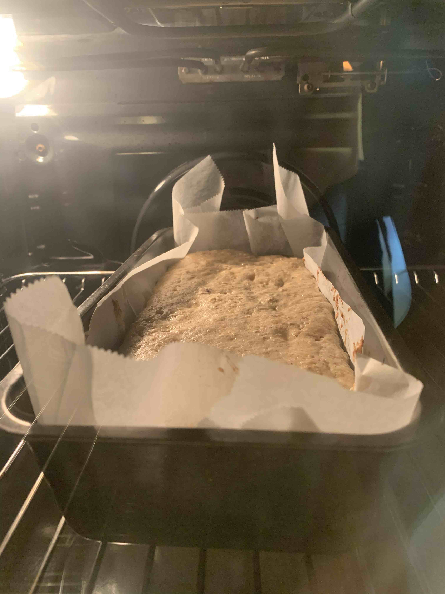

לחם בננה עם שיבולת שועל ופירות יער
מרכיבים
-
Graham Cracker CrustVanilla Custard FillingRed Berry Dessert Topping
מצרכים
-
1 כוס קמח כוסמין לבן1 כוס שיבולת שועל דקה (או עבה שנטחנה)1.5 אבקת אפיה1⁄4 כוס סוכרקמצוץ מלח3 בננות בשלות1⁄3 כוס שמן1⁄3 כוס משקה שיבולת שועל או סויהכפית תמצית ונילקינמון טחון לפי הטעם1⁄4 כוס צו׳קלט ציפס - אופציונלי1⁄4 כוס פירות יער קפואים - אופציונלי
הכנה
-
לחמם תנור לחום 180˚C.בקערה לערבב יחד את כל היבשים. קמח כוסמין, שיבולת שועל דקה, אבקת אפיה, סוכר, טיפלה מלח וקינמון.בקערה נוספת למעוך את הבננות (אם לא נמעכות אפשר לשים 30 שניות במיקרו).לבננות להוסיף את שאר המצרכים הרטובים שמן, משקה שיבולת שועל.להוסיף את פירות היער והצ׳וקלטצ׳יפס לקערת היבשים ולערבבלערבב הכל יחדלהעביר לתבנית אפיה משומנת קצת.לאפות 50-55 דקות.לחכות בסבלנות 15 דקות לפני שחותכים.
עוד תמונות:
קטגוריה: קינוח
מקור: Simple Veganista